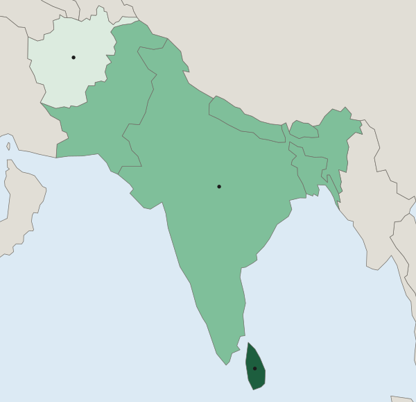

Scales of Analysis
Geographers study patterns at the global, regional, national and local scales, naming the scale from the unit of the data.
Part 1 · Hook
Why this matters
Part 2 · Before you start
What this builds on
Part 3 · Prerequisite check
Quick check before you start
1. A map of one country is shaded by province. What is the scale of analysis?
- Local (subnational)
- National
- Regional
- Global
Show the answer
Each value describes a province, part of the country.
- Correct: Local (subnational):
- National:
- Regional:
- Global:
2. What is a limitation of one value for a whole city?
- It hides differences between neighborhoods
- It cannot be mapped
- It is qualitative
- It has no year
Show the answer
A single value for a big area hides what happens inside it.
- Correct: It hides differences between neighborhoods:
- It cannot be mapped:
- It is qualitative:
- It has no year:
Part 4 · See it
See it first

Part 5 · Step by step
How it works, step by step
- Data for small units are combined into one value for a larger unit (aggregated data)the differences between the small units disappear
- A geographer changes the scale of analysisa new pattern can appear, such as rich and poor states inside one country
- A process works at one scale, such as world trade or rising seasit changes places at another scale, such as one coast or one city
Part 6 · Key ideas
Key ideas
- The four scales of analysis, global, regional, national and local, each fit inside the one above. Name the scale from the unit of the data.
- Aggregated data combine smaller units into a larger one. They make comparison easy but hide variation inside.
- A pattern at one scale can disappear or reverse at another: one shade for India hides rich and poor states.
- Processes link scales: world demand for avocados changes hillsides in Michoacán, Mexico; rising seas change streets in Miami Beach, Florida.
Part 7 · Misconception
A common mistake
The wrong idea: The national figure is the real answer, and smaller-scale data just add detail.
What actually happens: Each scale shows a real, different pattern. A national average can describe almost no actual place, so the right scale is the one that matches the question.
Part 8 · Check yourself
Check yourself
Exam-style questions. Anything you miss goes into your review queue.
Map
South Asia: income groups of countries

World Bank FY27 income group (by income per person)
- Low income
- Lower-middle income
- Upper-middle income
1. The map covers the region of South Asia. At what scale of analysis are its data?
- National: each shade is one value for one country
- Regional: the map covers South Asia
- Global: income groups are set for the whole world
- Local: India's states are shown inside it
Show the answer
Read the unit of the data, not the area of the map: one value per country is the national scale.
- Correct: National: each shade is one value for one country: Right: the unit each value describes is a country, so the data are national, even though the map shows a region.
- Regional: the map covers South Asia: The area shown is a region, but the scale of analysis is set by the unit of the data: countries.
- Global: income groups are set for the whole world: The groups are worldwide categories, but each value here describes one country.
- Local: India's states are shown inside it: India is one shade; no states are shown.
2. Which statement describes the pattern at this scale, naming places?
- India is upper-middle income, and Sri Lanka and Afghanistan are both low income
- Sri Lanka upper-middle, Afghanistan low, and the other five lower-middle income
- The seven countries share one income group, lower-middle income, across the map
- Afghanistan and Sri Lanka are upper-middle income, India low income
Show the answer
Name the places in each class from the legend.
- India is upper-middle income, and Sri Lanka and Afghanistan are both low income: India is lower-middle; Sri Lanka is upper-middle.
- Correct: Sri Lanka upper-middle, Afghanistan low, and the other five lower-middle income: Right: it names each class and the places in it (World Bank FY27).
- The seven countries share one income group, lower-middle income, across the map: Three classes appear on the map, not one.
- Afghanistan and Sri Lanka are upper-middle income, India low income: This swaps the classes: Afghanistan is low income and India lower-middle.
3. India is one shade on this map. What would a map of India's states, at the local scale, most likely show?
- One income group in each state, matching India's single shade at the national scale
- Nothing new, because local data repeat what the national data already show
- Big gaps: states such as Goa far richer per person than others, such as Bihar
- Data for South Asia's other countries, which this map leaves out
Show the answer
A pattern at one scale can hide a different pattern at a smaller scale.
- One income group in each state, matching India's single shade at the national scale: A national shade is an average of very different states, not a sign that they match.
- Nothing new, because local data repeat what the national data already show: Local data often show patterns that national data hide.
- Correct: Big gaps: states such as Goa far richer per person than others, such as Bihar: Right: one national value blends rich and poor states; a map of the states would reveal them.
- Data for South Asia's other countries, which this map leaves out: A map of India's states would show India, not its neighbors.
4. Stack the four scales of analysis from the largest area at the top to the smallest at the bottom.
Scales of analysis, largest to smallest
- Top: largest area
- Second
- Third
- Bottom: smallest area
Pick a piece, then the place it belongs. Drag works too. Pick a filled place to take its piece back.
Show the answer
Global, regional, national, local: each fits inside the one above it.
- Top: largest area: Global (the world)
- Second: Regional (South Asia)
- Third: National (India)
- Bottom: smallest area: Local (the city of Mumbai)
5. A map of a United States presidential election colored by state shows large blocks of one color. A map of the same election by county shows cities voting differently from nearby rural counties. What does this show?
- State maps are wrong and should not be used to report the results of an election
- County maps show a different election from the one shown on the state map
- Rural counties and cities vote the same way, as the state map shows
- Patterns change with scale: county data show a city and rural divide that states hide
Show the answer
Changing the scale of analysis can reveal patterns that larger units hide.
- State maps are wrong and should not be used to report the results of an election: Each map is accurate for its units; they answer different questions.
- County maps show a different election from the one shown on the state map: It is the same election, counted in smaller units.
- Rural counties and cities vote the same way, as the state map shows: The county map shows cities and rural counties voting differently.
- Correct: Patterns change with scale: county data show a city and rural divide that states hide: Right: the same votes, grouped by smaller units, show a different pattern.
6. Rising world demand for avocados led farmers in Michoacán, Mexico, to plant more avocado orchards on hillsides that were forest. Which scales does this example link?
- A global process (world demand) and a local change (land use in Michoacán)
- A national process (Mexican law) and a global change (world climate)
- A local process (one farm) and a regional change (across Latin America)
- A regional process (South Asian trade) and a national change (Mexico's border)
Show the answer
Explaining across scales means linking a process at one scale to its effect at another.
- Correct: A global process (world demand) and a local change (land use in Michoacán): Right: demand far away changes land use in one part of one country.
- A national process (Mexican law) and a global change (world climate): The example is about world demand, not a national law.
- A local process (one farm) and a regional change (across Latin America): The change is in one Mexican state, driven by world demand.
- A regional process (South Asian trade) and a national change (Mexico's border): South Asia is not part of the example.
Part 9 · Summary
Summary
Part 10 · Up next
What comes next
Part 11 · Connections